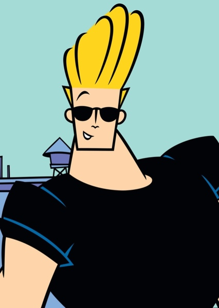
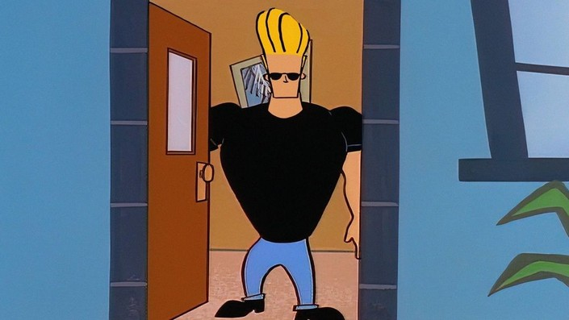

 |
Johnny BravoJohnny Bravo foi um desenho animado criado em 1997 por Van Partible e dirigido por Butch Hartman ,esse que foi estreado pela primeira vez na Cartoon Newtwork no mesmo ano de sua criação até 2007 tendo no total 71 episódios e 4 temporadas, o desenho como o nome sugere mostra as aventuras de Johnny Bravo, um homem de óculos escuros, nascissista, musculoso e autoproclamado conquistador, com um estilo de cabelo parecido a moda da época que seria o mesmo estilo do Elvis Presley, Johnny vive na cidade de Aron e os episódios envolvem na sua maior parte Johnny procurando uma namorada, isso que quase nunca da certo, mesmo que com sua boa aparência, ele acaba na maioria das vezes sendo agredido pela própria moça paquerada. Outros persongens comuns na série são sua mãe Bunny Bravoe e sua vizinha Suzy, que por vez adora estragar os planos de Johnny |
|
 |
||